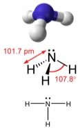
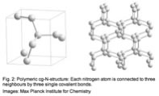
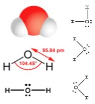
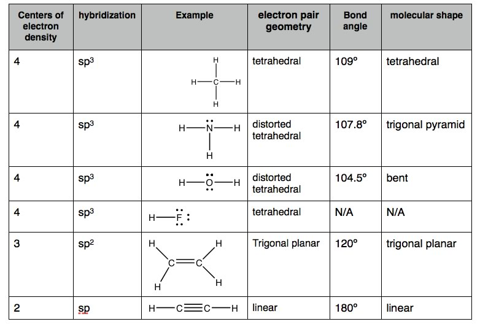
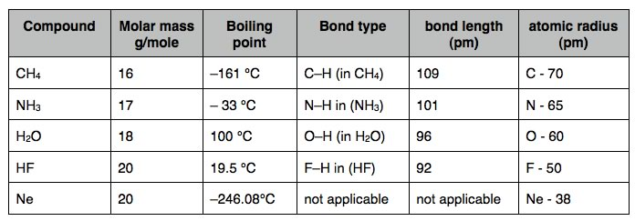
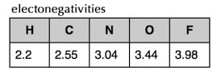
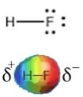

| Chapter 4.4: Bonding
in Nitrogen, Oxygen & Fluorine |
|
While the bonding of H and C atoms can generate a remarkable array of molecules, the hydrocarbons are really rather boring (chemically), that is, they take part in a rather limited range of reactions and would not, on their own, be expected to produce anything like life. There are many other elements, and their properties add chemical complexity to molecular behavior. From the perspective of living systems, two of the most interesting elements are nitrogen and oxygen. Carbon ?has six electrons (2 core and 4 valence), and can form four bonds with neighboring atoms. Nitrogen has seven electrons (2 core and 5 valence)(1s2, 2s2, 2px1, 2py1, 2pz1). So if you are following the rules, you might well assume that nitrogen would be able to form five bonds (after all, it has five valence electrons.) But when we look carefully, we NEVER see a nitrogen atom making five bonds - most of the time it makes three bonds! |
4.1 Heterogeneous compounds |
The simplest compound of nitrogen is molecular nitrogen, N2. The two N atoms are bonded together by a triple bond, consisting of a σ and two π bonds. Molecular nitrogen,? N2 is a stable (that is relatively unreactive) molecular compound. |
A common N-containing molecule is ammonia (NH3), which is analogous to methane (CH4). In ammonia the nitrogen atom is bonded to three H atoms. These three bonds involve three of N’s valence electrons; the remaining two valence electrons occupy a non-bonding orbital and are referred to as a “lone pair”. Given the molecular hybridization orbital model that we are using. This implies that four sp3 orbitals are formed from the N atom’s 2s and 2p orbitals, leading to four electron density centers around the nitrogen. FIGURE → shows several representations of ammonia. |
 |
| The first indicates the N-H bonds, but fails to show the lone pair orbital. The second uses the dash/wedge convention and dots to illustrate the geometry of both bonds and the lone pair. The actual shape of the molecule is determined by the arrangements of electron clouds and the bonded atoms - in NH3, all three bonds are equivalent (N-H) and so must be symmetrical, but the lone pair orbital is different – it takes up more space than bonding pairs (can you imagine why?) This has a subtle effect on the shape of the molecule. |
While the angles between the C-H bonds in CH4 are equal and 109º, the angles between the N-H bonds in NH3 are slightly smaller, 107.8º, the molecule forms a triangular based pyramid (rather than a tetrahedron). Finally, the Lewis structure (the most abstract), indicates the bonds and lone pair electrons, but gives an unrealistic depiction of the molecule’s geometry. It is up to the reader to supply the implicit information contained in the structure, that is bond angles and overall shape. |
 |
Bonding of Oxygen and Fluorine Let us now consider oxygen (O), which has 8 electrons, two in the core and six valence (1s2, 2s2, 2px2, 2py1, 2pz1.) As in the case with N, the same model explains why O doesn’t form six bonds – it’s too small and the orbitals that would need to be used to make six bonds are too high in energy to be energetically feasible, that is, not enough energy would be released upon bond formation to “pay for” that energy. |
The simplest oxygen containing molecule is molecular oxygen, O2. The two O atoms are connected by a σ and a π bond, forming a double bond. While the angles between the C-H bonds in CH4 are equal and 109º, the angles between the N-H bonds in NH3 are slightly smaller, 107.8º, the molecule forms a triangular based pyramid (rather than a tetrahedron). Finally, the Lewis structure (the most abstract), indicates the bonds and lone pair electrons, but gives an unrealistic depiction of the molecule’s geometry. It is up to the reader to supply the implicit information contained in the structure, that is bond angles and overall shape. The next simplest, stable, most common, and by far the most important compound of oxygen, at least from the perspective of living organisms, is water (H2O). |
 |
Continuing on across the periodic table we see that fluorine is the next element after oxygen. It has 9 electrons, 2 core and 7 valence. Rather than forming 7 bonds, fluorine only forms a single bond for basically the same reasons that oxygen only forms two bonds. Hydrogen fluoride, HF, has one bond, but four centers of electron density around the fluorine. Since it has only two atoms - they must by definition lie on a line - and therefore we do not need to discuss the “shape” of HF. |

As we will see, a valid Lewis structure makes it possible to extrapolate a huge amount of chemical and physical property information. A confusing point is that the Lewis structure can be written in a number of apparently different ways, which are actually equivalent - the key to remember is that the Lewis structure does not attempt to depict that molecule’s actual three dimensional structure. It is a short-hand that assumes you already know the arrangement of orbitals. No matter how it is drawn, the actual structure of a H2O molecule is the same, there is always a 104.5º bond angle between the O-H bonds. All these structures are equivalent. Polarized bonds and electronegativity Earlier we saw that the boiling points of hydrocarbons tends to increase as the number of carbons in the compound increases, and that molecules with similar molecular weights have similar, but not identical boiling points, with the shapes of the molecules having an effect, although a relatively small one. The attractions between hydrocarbons are due to London dispersion forces that depend on the size, surface area, and shape of the molecule. The larger these forces, the more strongly molecules will stick together and the more energy (higher temperature) will be needed to overcome these attractions. |

| Remember that the size of the atom is based on a balance between the attraction between the negatively charged electrons to the positively charged protons in the nucleus, the repulsions between the electrons as they get close to each other, and of course the arcane, but highly accurate rules of quantum mechanics. |  |
The reason that the atom’s size is decreasing as the number of protons increases is that each electron in the valence shell is attracted by an increasing number of protons in the nucleus. The more protons, the larger this attractive force. At the same time, the electrons in the same valence shell don’t tend to affect each other much - that is they don’t repel each other as much as you might suspect, because they are in different orbitals. Therefore the “effective nuclear charge” increases from right to left across the periodic table. This increase in “effective nuclear charge” doesn’t just affect the electrons in isolated atoms - but also affects the electrons in bonds. The ability to attract the electrons in bonds is called electronegativity, and since it derives from the same effect as the effective nuclear charge and atomic radius, electronegativity also tends to increase from left to right across a row in the periodic table. It also decreases from top to bottom in a group of the periodic table - which makes sense - the further electrons are from the nucleus, the less they will be attracted. The exceptions to this rule are the noble gases (He, Ne, Ar etc), since they do not form bonds with other elements (under normal circumstances) their electronegativities are usually not reported. |
| Fluorine is the most electronegative element, and the Lewis structure of HF shows the one H-F bond and three lone pairs. Fluorine attracts electrons very strongly - even the ones in the H-F bond, so that the fluorine atom ends up with more than its fair share of electrons and hydrogen ends up with less. One way to think about this is that the electron density in the H–F bond is shifted closer to the F and away from the H. |  |
The result of this is that the F has more negative charge
than positive charge, and the H has more positive than negative charge.
We indicate this by writing a δ– charge on the F and a δ+ charge on the H (δ is often used to denote a small increment). That means that there is an unequal distribution of charge in the molecule. The HF molecule has a permanent dipole; the H-F bond is said to be “polarized” and the molecule is considered “polar”. Permanent dipoles are different from the transient dipoles associated with London dispersion forces. Because of their permanent dipoles, molecules of HF interact with one another, both attractively and repulsively, more strongly in some orientations than in others. HF molecules are attracted to each other much more strongly than say Ne atoms because of the presence of these permanent dipoles. This results in a much higher boiling point for HF than for Ne (see table above). That is, much more energy has to be supplied to the system to separate HF molecules from each other, than is needed to separate Ne atoms. An important point to note is that H–F
only has one bond, and the polarity of the bond is the same as the
polarity of the whole molecule, as we will see this is not the case
in molecules with more complex structures. |
So let us take this logic a bit further, if HF has the most polar bonds, the HF molecules should stick together with the strongest attractions, and HF should have the highest boiling point. But oh no! Water’s boiling point is significantly higher (100 ºC compared to 19 ºC for HF). What is going on? Oxygen is not as electronegative as fluorine and so the O–H bond is not as polar as the H-F bond, why then is the boiling point of H2O 81 °C higher than HF? |
4.1
Heterogeneous compounds |
Question to answer:
Questions to ponder:
|
| 27-Jun-2012 |